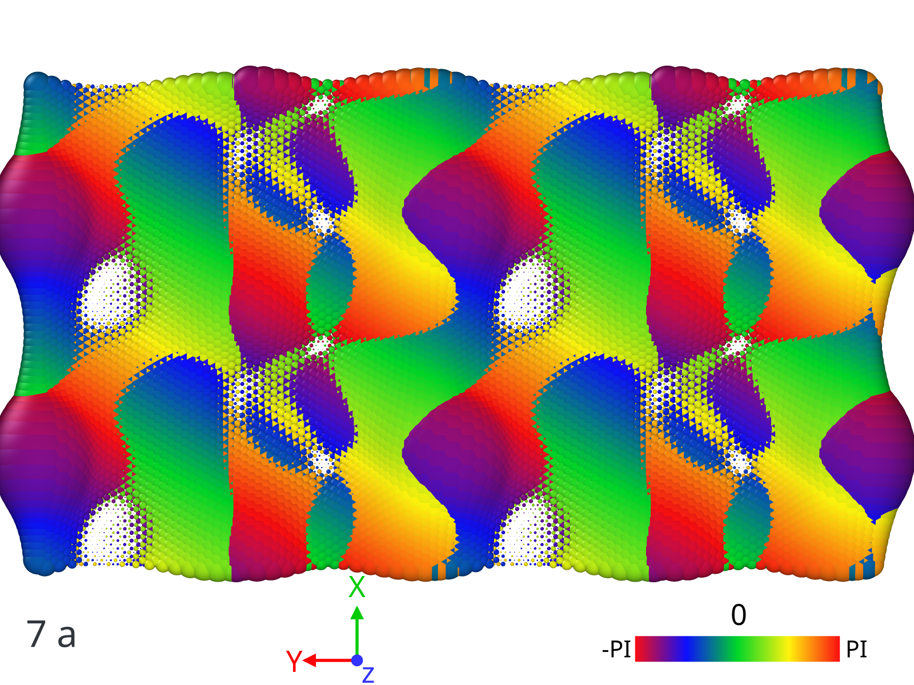
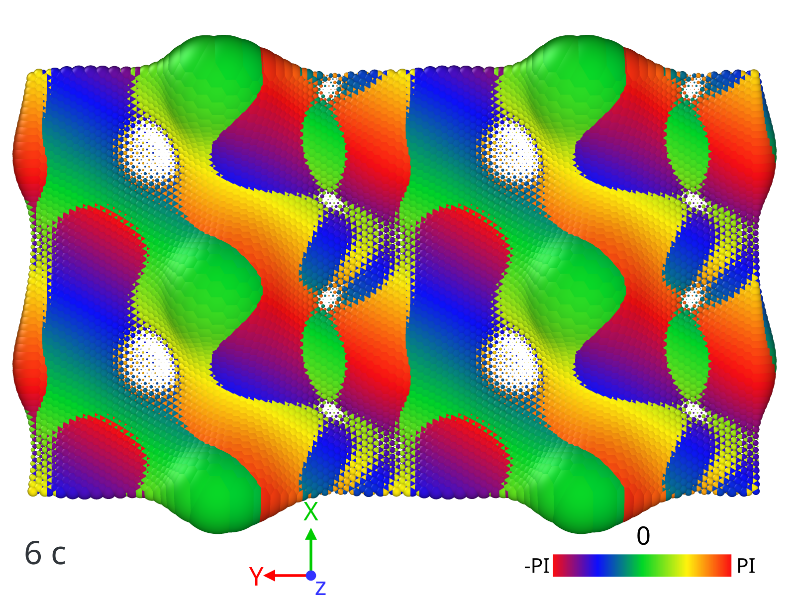

Example 2: Symmetry operations and wave vectors parity¶
In this example I show how to investigate parities of wave vectors, for any symmetry operations at a any given point of Brillouin zone. Such tool could be usefull to understand topological properties of band structure. As an example, here, we consider two unitcells of twisted bilayer graphene at magic angle 1.08 degrees.
Note
This project is under active development. symmetry module is fully developed for rectangular lattice. For rhombic, mimicing the spirit, implementation is in progress.
First let’s calculate eigen vectors at high symmetry points:
import sys
import numpy as np
import ltbsymm as ls
from mpi4py import MPI
comm = MPI.COMM_WORLD
rank = comm.Get_rank()
# Start a TB object and set/load configuration
mytb = ls.TB()
mytb.set_configuration('1.08_2AA.data', r_cut = 5.7, local_normal=True, nl_method='RS')
mytb.save(configuration =True)
# Define Hamiltonian and fix the parameters of the Hamiltonian that are the same for all pairs
def H_ij(v_ij, ez_i, ez_j, a0 = 1.42039011, d0 = 3.344, V0_sigam = +0.48, V0_pi = -2.7, r0 = 0.184* 1.42039011 * np.sqrt(3) ):
"""
Args:
d0: float
Distance between two layers. Notice d0 <= than minimum interlayer distance, otherwise you are exponentially increasing interaction!
a0: float
Equilibrium distance between two neghibouring cites.
V0_sigam: float
Slater-Koster parameters
V0_pi: float
Slater-Koster parameters
r0: float
Decay rate of the exponential
"""
#print(v_ij, ez_i, ez_j)
dd = np.linalg.norm(v_ij)
V_sigam = V0_sigam * np.exp(-(dd-d0) / r0 )
V_pi = V0_pi * np.exp(-(dd-a0) / r0 )
tilt_1 = np.power(np.dot(v_ij, ez_i)/ dd, 2)
tilt_2 = np.power(np.dot(v_ij, ez_j)/ dd, 2)
t_ij = V_sigam * (tilt_1+tilt_2)/2 + V_pi * (1- (tilt_1 + tilt_2)/2)
return t_ij
# Define MBZ and set K-points
mytb.MBZ()
mytb.set_Kpoints(['X','Gamma','Y', 'W'], N=0, saveH=True)
# For twisted bilayer graphene sigma=np.abs(V0_pi-V0_sigam)/2 . An approximate value that flat bands are located
mytb.calculate_bands(H_ij, n_eigns = 8, sigma=np.abs(-2.7-0.48)/2, solver='primme', tbt='type2', return_eigenvectors = True)
mytb.save(bands=True)
MPI.Finalize()
A similar code to above is explained in details for a similar case (Example 1).
Note
Once a band structure calculation is done, you can always save using
mytb.save(bands=True, configuration=True)
This is very conveninet, becasue for later application or symmetry analysis you can just simply load, for example:
mytb.load('out_1.08_2AA', bands='bands_.npz', configuration='configuration_.npz')
There is no need to re-calculate from begining
Having wave vectors, we can proceed to create a Symm object.
if rank == 0:
sm = ls.Symm(mytb)
sm.build_map('C2z',['-X+1/2*Rx','-Y+1/2*Ry','Z'], atol=0.3, plot = True)
sm.build_map('C2y',['-X','Y+1/2*Ry','-Z'], atol=0.3)
sm.build_map('C2x',['X+1/2*Rx','-Y','-Z'], atol=0.3)
You may define all symmetry operations of the space group. build_map() simply verifies if the suggest symmetry exists, and if so, and how does it map with existing orbital indices.
The second argument of build_map() should be arithmetics math operations in following order: [operation for X, operation for Y, operation for Z]
The Arithmetics symbols and namespaces below are acceptable:
+, -, /, *, X, Y, Z, Rx, Ry, and Rz.
Rx, Ry, and Rz are lattice vectors along their directions. X, Y, and Z are coordinates of cites inside unitcell.
In our example 1/2*Rx does a non-symmorphic translation.
Next, build (N*N) matrices for the verified symmetry operations.
# Make the operation Matrix at a given point of receiprocal space
sm.make_Cmat('C2x', 'Gamma')
sm.make_Cmat('C2y', 'Gamma')
sm.make_Cmat('C2z', 'Gamma')
And we can simply check if they make sense, by taking the square
# Check operations square and how they commute
sm.check_square('C2x', 'Gamma', ftol = 30)
sm.check_square('C2y', 'Gamma', ftol = 30)
sm.check_square('C2z', 'Gamma', ftol = 30)
We may need to know how the symmetry operations commute, or anti-commute !
sm.check_commute('C2x', 'C2y', 'Gamma', ftol=30)
sm.check_commute('C2z', 'C2y', 'Gamma', ftol=30)
sm.check_commute('C2x', 'C2z', 'Gamma', ftol=30)
In this case results like this:
C2x @ C2x = identity at Gamma
C2y @ C2y = identity at Gamma
C2z @ C2z = identity at Gamma
[C2x, C2y] do commute at Gamma
[C2z, C2y] do commute at Gamma
[C2x, C2z] do commute at Gamma
We are inerested in symmetry operation on wave vectors associated with flat bands, therefore first we detect if there are any flat bands:
mytb.detect_flat_bands()
Results in:
8 flat bands detected
Now we can check if (flat) wave vectors respect the symmetries that we defined:
sm.vector_diag('Gamma', name1='C2x', subSize = 4, skip_diag = True)
Which results in:
======================
** vector_diag at Gamma **
======================
Subspace 1.0 with energies:
0.005687156959874318
0.005675662193339814
-0.0003969110247522556
-0.00041691802874066486
<psi| C2z |psi>
[[-0.8+0.j , 0.5-0.2j,-0. +0.j ,-0. +0.j ],
[ 0.5+0.2j, 0.8+0.j , 0. -0.j ,-0. +0.j ],
[-0. -0.j , 0. +0.j , 0.9+0.j , 0.3-0.j ],
[-0. -0.j ,-0. -0.j , 0.3+0.j ,-0.9+0.j ]]
<psi| C2y |psi>
[[ 1.+0.j, 0.-0.j, 0.-0.j,-0.+0.j],
[ 0.+0.j, 1.+0.j, 0.-0.j,-0.+0.j],
[ 0.+0.j, 0.+0.j,-1.+0.j,-0.+0.j],
[-0.-0.j,-0.-0.j,-0.-0.j,-1.+0.j]]
<psi| C2x |psi>
[[-0.8+0.j , 0.5-0.2j, 0. -0.j ,-0. +0.j ],
[ 0.5+0.2j, 0.8+0.j , 0. -0.j , 0. -0.j ],
[ 0. +0.j , 0. +0.j ,-0.9+0.j ,-0.3+0.j ],
[-0. -0.j , 0. +0.j ,-0.3-0.j , 0.9+0.j ]]
Subspace 2.0 with energies:
-0.003000614802293855
-0.003018659755200659
-0.0035570670624436307
-0.0036018736346046243
<psi| C2z |psi>
[[-0.5+0.j ,-0.1+0.9j, 0. +0.j ,-0. +0.j ],
[-0.1-0.9j, 0.5+0.j ,-0. +0.j ,-0. -0.j ],
[ 0. -0.j ,-0. -0.j , 0.5+0.j ,-0.3+0.8j],
[-0. -0.j ,-0. +0.j ,-0.3-0.8j,-0.5-0.j ]]
<psi| C2y |psi>
[[-1.+0.j, 0.-0.j, 0.+0.j,-0.+0.j],
[ 0.+0.j,-1.+0.j,-0.+0.j,-0.-0.j],
[ 0.-0.j,-0.-0.j, 1.+0.j,-0.+0.j],
[-0.-0.j,-0.+0.j,-0.-0.j, 1.+0.j]]
<psi| C2x |psi>
[[ 0.5+0.j , 0.1-0.9j,-0. -0.j ,-0. +0.j ],
[ 0.1+0.9j,-0.5+0.j , 0. -0.j ,-0. -0.j ],
[-0. +0.j , 0. +0.j , 0.5+0.j ,-0.3+0.8j],
[-0. -0.j ,-0. +0.j ,-0.3-0.8j,-0.5+0.j ]]
As you can see there are offdiagonal terms in C2x and C2z space, which don’t allow us to read parities.
Unfortunately, there is no guarantee that LANCZOS wave vectors would be diagonal in this subspace.
Hopefully, we can try to see if they are diagonalizable
# Diagonalize wave vectors respect to a given symmetry
sm.vector_diag('Gamma', name1='C2z', name2= 'C2x', subSize = 4, rtol=0.1, skip_diag = False)
======================
** vector_diag at Gamma **
======================
Diagonalizing flat bands subspace 1.0 with energies:
0.005687156959874318
0.005675662193339814
-0.0003969110247522556
-0.00041691802874066486
<psi| C2z |psi>
[[-0.8+0.j , 0.5-0.2j,-0. +0.j ,-0. +0.j ],
[ 0.5+0.2j, 0.8+0.j , 0. -0.j ,-0. +0.j ],
[-0. -0.j , 0. +0.j , 0.9+0.j , 0.3-0.j ],
[-0. -0.j ,-0. -0.j , 0.3+0.j ,-0.9+0.j ]]
Diagonalizing respect to C2z
eignvalues: [-1.-0.j, 1.+0.j, 1.+0.j,-1.-0.j]
Second off-diagonalizing respect to C2x
upper_block is
[[-1.+0.j, 0.-0.j],
[ 0.+0.j, 1.+0.j]]
eignvalues: [-1.-0.j, 1.-0.j]
lower_block is
[[-1.+0.j,-0.+0.j],
[-0.-0.j, 1.+0.j]]
eignvalues: [-1.-0.j, 1.+0.j]
Final check if diagonalized respect to C2z
[[-1.+0.j,-0.+0.j, 0.+0.j, 0.-0.j],
[-0.-0.j, 1.+0.j,-0.+0.j, 0.+0.j],
[ 0.-0.j,-0.-0.j, 1.+0.j,-0.+0.j],
[ 0.+0.j,-0.-0.j,-0.-0.j,-1.+0.j]]
Final check if diagonalized respect to C2y
[[ 1.+0.j, 0.-0.j, 0.-0.j,-0.+0.j],
[ 0.+0.j, 1.+0.j,-0.+0.j, 0.-0.j],
[ 0.+0.j,-0.-0.j,-1.+0.j,-0.+0.j],
[-0.-0.j, 0.+0.j,-0.-0.j,-1.+0.j]]
Final check if diagonalized respect to C2x
[[-1.+0.j, 0.+0.j,-0.+0.j, 0.-0.j],
[ 0.+0.j, 1.+0.j,-0.+0.j, 0.-0.j],
[-0.-0.j,-0.-0.j,-1.+0.j, 0.+0.j],
[ 0.+0.j, 0.+0.j, 0.+0.j, 1.+0.j]]
Diagonalizing flat bands subspace 2.0 with energies:
-0.003000614802293855
-0.003018659755200659
-0.0035570670624436307
-0.0036018736346046243
<psi| C2z |psi>
[[-0.5+0.j ,-0.1+0.9j, 0. +0.j ,-0. +0.j ],
[-0.1-0.9j, 0.5+0.j ,-0. +0.j ,-0. -0.j ],
[ 0. -0.j ,-0. -0.j , 0.5+0.j ,-0.3+0.8j],
[-0. -0.j ,-0. +0.j ,-0.3-0.8j,-0.5-0.j ]]
Diagonalizing respect to C2z
eignvalues: [-1.-0.j,-1.+0.j, 1.+0.j, 1.-0.j]
Second off-diagonalizing respect to C2x
upper_block is
[[ 1.+0.j,-0.+0.j],
[-0.-0.j,-1.+0.j]]
eignvalues: [ 1.+0.j,-1.+0.j]
lower_block is
[[-1.+0.j,-0.+0.j],
[-0.-0.j, 1.+0.j]]
eignvalues: [-1.+0.j, 1.-0.j]
Final check if diagonalized respect to C2z
[[-1.+0.j, 0.-0.j, 0.-0.j,-0.-0.j],
[ 0.+0.j,-1.+0.j,-0.+0.j,-0.+0.j],
[ 0.+0.j, 0.-0.j, 1.+0.j, 0.-0.j],
[-0.+0.j,-0.-0.j, 0.+0.j, 1.+0.j]]
Final check if diagonalized respect to C2y
[[-1.+0.j, 0.-0.j,-0.+0.j, 0.+0.j],
[ 0.+0.j, 1.+0.j, 0.-0.j, 0.+0.j],
[-0.-0.j, 0.+0.j,-1.+0.j,-0.+0.j],
[ 0.-0.j, 0.-0.j,-0.-0.j, 1.+0.j]]
Final check if diagonalized respect to C2x
[[ 1.+0.j, 0.-0.j,-0.+0.j, 0.+0.j],
[ 0.+0.j,-1.+0.j,-0.+0.j, 0.+0.j],
[-0.-0.j,-0.-0.j,-1.+0.j, 0.+0.j],
[ 0.-0.j, 0.-0.j, 0.-0.j, 1.+0.j]]
Now we see, they are successfully diagonalized. So we can read the parities.
Below are two wave vectors with imaginary-odd parity under non-symmorphic C2x symmetry. Somethis also cool to see :)
 Visualized by OVITO.
Colors, and size reperesenting their phase and amplitude as a function of (x,y). Unitcell has been repeated 4 times for visibility.